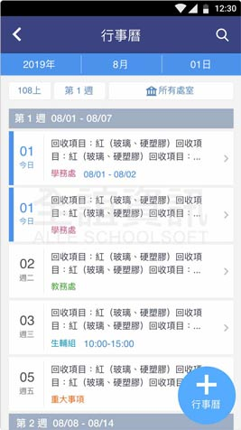
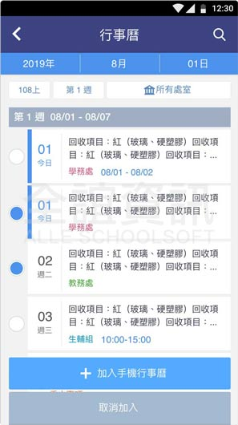

<div class="APP_application_list_class">
  <div class="APP_application_list_title">
    <span class="APP_application_list_title_left">
      <h4>行事曆</h4>  
    </span>
    <span class="APP_application_list_title_right">
      <span class="APP_list_user APP_user_orange">
        學生
      </span>
      <span class="APP_list_user APP_user_green">
        老師
      </span>
      <span class="APP_list_user APP_user_red">
        家長
      </span>
    </span>
    <div class="clear"></div>
  </div>

  <div class="APP_application_list_words">
    由學期週次為單位，清楚列出當週當日學校會議、活動行程等，另外能將學校行事曆加入手機行事曆(ios或Google行事曆)。
  </div>

  <div class="APP_application_list_pic">
    <span class="APP_list_pic_margin">
      
    </span>
    <span class="APP_list_pic_margin">
      
    </span>
  </div>
</div>
